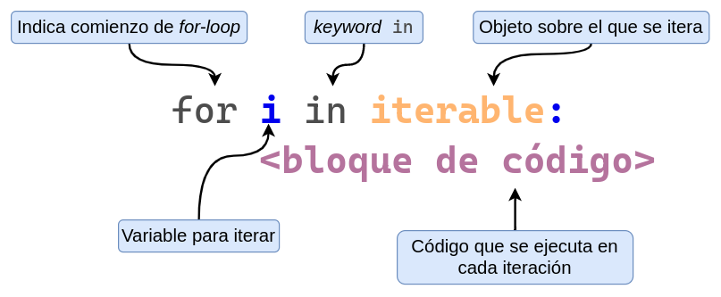
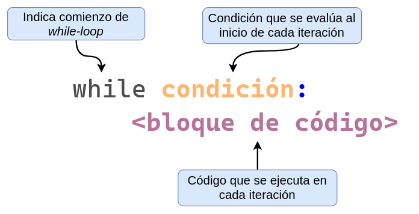
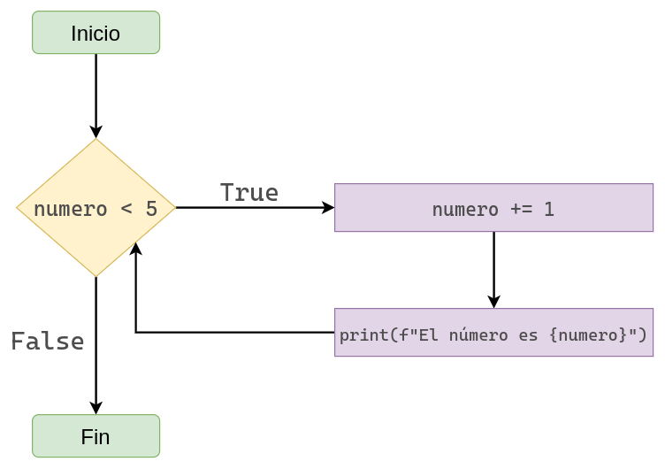

Anteriormente aprendimos a crear objetos que contienen otros objetos (listas, tuplas y diccionarios).
Cuando queríamos realizar una acción con cada uno de los objetos que estos contenían, teníamos que escribir el mismo código para acceder a cada uno de ellos de a uno.
Por ejemplo, supongamos que tenemos un listado con nombres de nuestros amigos y queremos ponerlos a todos en mayúsculas:
Vemos que realizamos exactamente la misma acción con cada nombre en la lista… ¿No estaría bueno poder automatizarlo?
Y para eso, en esta sección vamos a aprender sobre bucles.
¿Qué son los bucles?
Los bucles son una estrcutura de los lenguajes de programación que nos permite repetir la ejecución de código de manera automática.
En otras palabras, los bucles hacen que sea muy fácil ejecutar el mismo bloque de código una y otra vez.
A la repetición del mismo bloque de código una y otra vez le decimos iteración. Entonces, los bucles nos ayudan a iterar.
En Python tenemos dos tipos de bucles:
El bucle for (for-loop).
El bucle while (while-loop).
La diferencia entre este tipo de bucles es que con el forconocemos la cantidad de iteraciones que vamos a realizar de antemano.
En cambio, con el whileno conocemos la cantidad de iteraciones que vamos a realizar de antemano.
Veamos el ejemplo anterior pero utilizando un bucle for. En este caso, generamos una nueva lista llamada nombres_modificados donde vamos a almacenar los nombres modificados.
nombres = ["julieta", "facundo", "emiliano", "mariana", "victoria"]nombres_modificados = []# Bucle forfor nombre in nombres: nombres_modificados.append(nombre.upper())print("Nombres originales:")print(nombres)print("\nNombres modificados:")print(nombres_modificados)
En un bucle for encontramos los siguientes componentes.
La palabra clave for
El nombre de una variable que se usa para iterar (variable de iteración)
La palabra clave in
El objeto sobre el cual iteramos, seguido por :
En la siguiente linea y con indentación, el bloque de código a ejecutar

En Python, al igual que en las sentencias if, else y otras estructuras de control, los dos puntos (:) se utilizan para indicar el comienzo de un bloque de código, y la indentación define el contenido de ese bloque. Nunca se emplean llaves {} como en otros lenguajes.
En el caso de un bucle for, se declara una variable que va tomando, en cada iteración, uno de los valores del iterable que se está recorriendo. Por ejemplo, si el iterable contiene 10 objetos, el bucle ejecutará 10 iteraciones y la variable de iteración (por convención llamada i, aunque puede tener cualquier nombre) irá adoptando esos valores, uno por uno.
Ejemplos
Dado que a iterar se aprende iterando, veamos algunos ejemplos:
for i in [3, 1, 2]:print(f"El número es {i}.")
El número es 3.
El número es 1.
El número es 2.
También podemos ordenar los valores de la lista sobre la que iteramos:
for i insorted([3, 1, 2]):print(f"El número es {i}.")
El número es 1.
El número es 2.
El número es 3.
Pero no es necesario iterar sobre listas. De hecho, podemos iterar sobre cualquier secuencia, por ejemplo, una tupla:
for i in (3, 1, 2):print(f"El número es {i}.")
El número es 3.
El número es 1.
El número es 2.
for i insorted((3, 1, 2)):print(f"El número es {i}.")
El número es 1.
El número es 2.
El número es 3.
E incluso una cadena de caracteres:
for c in"Hola Curso":print(c)
H
o
l
a
C
u
r
s
o
Variable de iteración
El nombre de la variable que se usa para iterar es arbitrario. Sin embargo, es recomendable no utilizar el mismo nombre que el de otra variable en nuestro programa. Por ejemplo:
i =1for i in [1, 2, 3]:print(i)print(i)
1
2
3
3
La variable de iteración i va pisando su valor y cualquier valor que esta pudo haber tenido antes.
Así, luego de la finalizar el bucle, el valor de i es 3.
Los bucles permiten generar nuevos objetos de forma automática.
En el siguiente ejemplo, partimos de una lista con cadenas que pueden contener números o letras. Mediante un for, crearemos tres listas: una con los números, otra con el texto y una tercera con los elementos que no sean ninguno de los dos.
# Crear tres listas vacías (que contienen los diferentes tipos de datos)numeros = []texto = []otros = []# Iterar a traves de los valores de la lista originalfor valor in lista_original:# Si es numérico, lo agregamos en la lista 'numeros'if valor.isnumeric(): numeros.append(valor)# Sino es numérico, pregunto si es alfabético (o una letra del abecedario)elif valor.isalpha(): texto.append(valor)# Caso contrario, lo metemos en la lista de otroselse:print(f"La cadena '{valor}' no es ni numérica ni alfabética.") otros.append(valor)print(lista_original)print(numeros)print(texto)print(otros)
La cadena '@' no es ni numérica ni alfabética.
La cadena '?' no es ni numérica ni alfabética.
La cadena '!' no es ni numérica ni alfabética.
['1', '@', 'x', 'y', '?', '3', '4', '7', 'f', 'l', '9', '10', '!']
['1', '3', '4', '7', '9', '10']
['x', 'y', 'f', 'l']
['@', '?', '!']
Crear listas numéricas con range().
Python provee una función llamada range() que hace que sea muy fácil generar una secuencia de números. Por ejemplo, podemos usar range() para imprimir una serie de números.
for i inrange(1, 5):print(i)
1
2
3
4
range() funciona de manera similar a los slices, es decir, no incluye el límite superior. Además, si se usa con un solo argumento, es equivalente a range(0, numero).
for i inrange(5):print(i)
0
1
2
3
4
Una forma útil de entender range(n) es verlo como la creación de una secuencia con los primeros n números, comenzando desde 0.
x =range(5)print(x)print(type(x))
range(0, 5)
<class 'range'>
Podemos obtener una lista a partir de un range usando la función list().
list(x)
[0, 1, 2, 3, 4]
Y, por qué no, una tupla también.
tuple(x)
(0, 1, 2, 3, 4)
range() admite un tercer argumento opcional que especifica el paso entre valores. Por defecto es 1. Veamos algunos ejemplos:
Lista de números entre 0 y 10 (no inclusivo), avanzando de a 2 en cada paso.
list(range(0, 10, 2))
[0, 2, 4, 6, 8]
Intento de lista de números entre 10 y 0 (no inclusivo).
list(range(10, 0))
[]
Vemos que el resultado no es el esperado. Esto se debe a que el paso es por defecto 1 y es imposible recorrer desde el 10 al 0 sumando de a 1. Si cambiamos el paso a -1, funciona correctamente:
list(range(10, 0, -1))
[10, 9, 8, 7, 6, 5, 4, 3, 2, 1]
¿Sobre qué cosas podemos iterar en un bucle for?
Recordemos el diagrama que vimos anteriormente…
En naranja tenemos resaltado iterable. Pero, ¿qué significa que un objeto sea iterable?
Que podemos iterar a través de el.
Que podemos recorrerlo elemento por elemento.
Que puede devolver sus elementos de a uno a la vez.
De manera similar a las secuencias, el término iterable describe una categoría de tipos de datos. De hecho, todas las secuencias son iterables (por eso podemos recorrer listas, tuplas y cadenas), pero no es requisito ser una secuencia para ser iterable. Por ejemplo, los diccionarios no son secuencias y, sin embargo, pueden recorrerse porque implementan un método para entregar sus elementos de uno en uno.
for i in {"a": 1, "b": 2}:print(i)
a
b
El bucle while
En un bucle while encontramos los siguientes componentes.
La palabra clave while.
Una condición, es decir, una expresión que se evalúa a True o False, seguido por los dos puntos :.
En la siguiente linea y con indentación, el bloque de código a ejecutar.

numero =0while numero <5: numero +=1# Abreviación de x = x + 1print(f"El numero es {numero}")
El numero es 1
El numero es 2
El numero es 3
El numero es 4
El numero es 5

Analicemos el diagrama:
Mientras numero < 5 sea True, Python ejecutará el cuerpo del bucle completo.
En la primera iteración, numero es 0.
Como 0 es menor a 5, Python imprime el número y luego le agrega 1, haciendo que el número sea 1.
En la segunda iteración, numero es 1.
Como 1 es menor a 5, Python imprime el número y luego le agrega 1, haciendo que el número sea 2.
El proceso continúa hasta que numero deja de ser menor que 5, momento en el que el bucle se detiene.
Bucles infinitos ♾️
Veamos el siguiente ejemplo:
x =0while x <5:print(x)
Si ejecutamos este código, Python nunca detendrá su ejecución. Esto sucede porque el valor de x nunca cambia, por lo que la condición x < 5 es siempre verdadera. Este es un caso típico de bucle infinito, algo que puede ocurrir con cualquier while, y en particular con while True si no incluimos una forma de salir del bucle (por ejemplo, con break).
Si entramos en un bucle infinito, la única forma de detenerlo es interrumpir la ejecución manualmente:
En la terminal: CTRL + C
En un editor de código: usar el botón de interrupción
La sentencia break
Python provee la sentencia break que sirve para terminar un bucle (for o while) de manera anticipada.
Veamos algunos ejemplos de uso.
whileTrue:print("¡Hola!")break
¡Hola!
En el ejemplo anterior, la condición del bucle era True, lo que implicaría una ejecución infinita. Sin embargo, al final de la primera iteración encontramos un break, que fuerza la salida del bucle. De forma similar, podemos reescribir el primer while utilizando esta estructura alternativa.
numero =0whileTrue:if numero >=5:break numero +=1print(f"El numero es {numero}")
El numero es 1
El numero es 2
El numero es 3
El numero es 4
El numero es 5
numero =0whileTrue: numero +=1print(f"El numero es {numero}")if numero >=5:break
El numero es 1
El numero es 2
El numero es 3
El numero es 4
El numero es 5
Supongamos que queremos sumar los valores de una lista hasta que se cumpla cierta condición, por ejemplo, que el total sea mayor o igual a 20.
Si partimos de una lista de números cualquiera, no sabemos de antemano cuántos elementos será necesario sumar. Sin embargo, esto no será un problema si utilizamos la estructura while en combinación con la sentencia break.
En el bloque de código anterior puede llamar la atención el uso de
while valores:
El bucle while valores: se ejecuta mientras la lista tenga elementos. En cada iteración, .pop(0) extrae el primer elemento, se suma a suma y se imprime el total acumulado. Si en algún momento suma alcanza o supera el umbral, se ejecuta break para detener el bucle aunque aún queden elementos en la lista. Si la lista se vacía antes de llegar al umbral, el bucle también finaliza automáticamente gracias a la condición while valores:.
Un ejemplo más conciso es el siguiente:
if [1, 2, 3]:print("Bloque 'if'")else:print("Bloque 'else'")
Bloque 'if'
if []:print("Bloque 'if'")else:print("Bloque 'else'")
Bloque 'else'
Ahora supongamos que tenemos una lista de números aleatorios que representan algún conteo.
Estamos interesados en la cantidad de extracciones que se necesitaron hasta que el conteo supere cierto umbral, por ejemplo, 30.
numeros_aleatorios = [5, 7, 6, 4, 2, 2, 5, 3, 6, 4, 4, 6, 3, 6, 1,3, 3, 1, 9, 5, 5, 6, 5, 1, 7, 3, 3, 1, 3, 4]umbral =30# Inicializamos suma y cantidad de iteraciones en 0suma =0iteraciones =0# Mientras la lista no esté vacíawhile numeros_aleatorios:# Agregamos 1 al conteo de iteraciones realizadas iteraciones +=1# Extraemos el primer número de la lista y lo sumamos a la suma suma += numeros_aleatorios.pop(0)# Si la suma es mayor o igual al umbral, dejamos de iterarif suma >= umbral:breakif suma >= umbral:print(f"Se superó el umbral de {umbral} en la iteración {iteraciones}, sumando {suma}.")else:print(f"La suma de los elementos de la lista no llega a superar {umbral}")
Se superó el umbral de 30 en la iteración 7, sumando 31.
Solicitar valores de entrada al usuario
Python provee una función llamada input() que sirve para solicitar al usuario que ingrese un valor.
El argumento es el mensaje que se mostrará en pantalla.
El tipo de dato que se devuelve es str.
nombre =input("Ingresa tu nombre: ")print(f"El nombre ingresado es '{nombre}'")
El nombre ingresado es 'Tomi'
Esta funcion combinada con el bucle while nos permite generar programas interactivos que solicitan entrada al usuario hasta que se cumple una condición. Por ejemplo, supongamos que queremos solicitar una contraseña que tenga 8 caracteres o más.
whileTrue: pwd =input("Ingrese su contraseña: ")iflen(pwd) >=8:print("¡Muchas gracias!")breakelse:print(f"La contraseña '{pwd}' es corta")print(f"La contraseña ingresada es '{pwd}'")
La contraseña '' es corta
La contraseña 'prueba' es corta
¡Muchas gracias!
La contraseña ingresada es 'prueba 2'
La sentencia continue
Así como tenemos la sentencia break que le dice a Python que interrumpa la ejecución de un bucle, tenemos la sentencia continue que le dice que pase a la siguiente iteración sin ejecutar el código a continuación de la misma.
Cuando un programa se encuentra con continue se procede a la siguiente iteración del bucle, re-evaluando la condición del while de ser necesario.
En el siguiente ejemplo tenemos una lista con números del 1 al 10 y queremos sumar solamente los números pares.
# Crear lista del 1 al 10numeros =list(range(1, 11))print(numeros)suma =0while numeros: numero = numeros.pop(0)if numero %2!=0:continue suma += numeroprint("Sumando el numero", numero)print("La suma es", suma)
[1, 2, 3, 4, 5, 6, 7, 8, 9, 10]
Sumando el numero 2
Sumando el numero 4
Sumando el numero 6
Sumando el numero 8
Sumando el numero 10
La suma es 30
En este programa, si numero % 2 != 0, el continue le indica a Python que debe pasar a la siguiente iteración sin evaluar lo que hay debajo. Por lo tanto, cuando el número es impar, no se ejecuta ni la suma ni el print.
Este problema se puede resolver también utilizando un bucle for en vez de un bucle while.
numeros =list(range(1, 11))suma =0for numero in numeros:if numero %2!=0:continue suma += numeroprint("Sumando el numero", numero)print("La suma es", suma)
Sumando el numero 2
Sumando el numero 4
Sumando el numero 6
Sumando el numero 8
Sumando el numero 10
La suma es 30
Conclusión
Cuándo usar un bucle for.
Sabemos exactamente, y de antemano, cuantas veces queremos iterar.
Queremos iterar a través de todos los elementos de un objeto determinado.
Cuándo usar un bucle while.
No sabemos exactamente cuantas veces queremos iterar.
Queremos iterar hasta que se cumpla (o se deje de cumplir) una condición determinada.